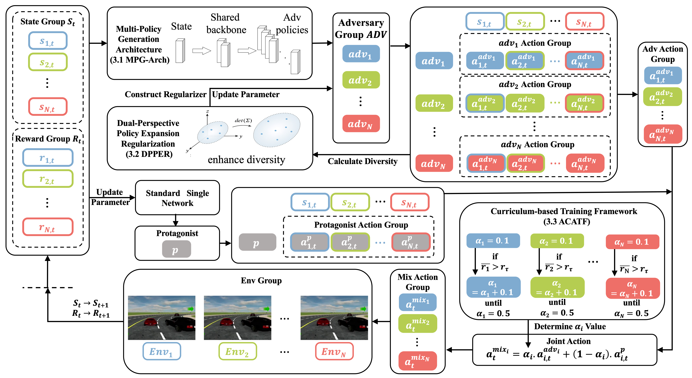
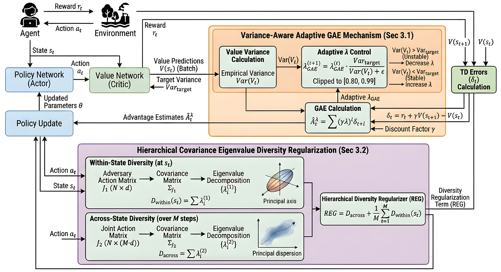
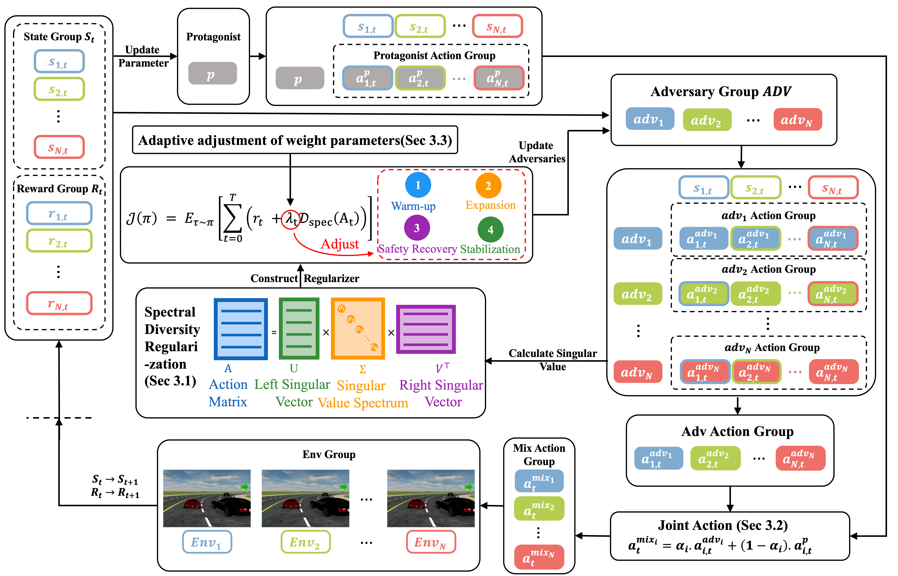

Robust Autonomous Driving
Robust control and decision-making for autonomous driving under dynamic perturbations and uncertain vehicle dynamics.
ROBOTICS · DEEP REINFORCEMENT LEARNING · AUTONOMOUS DRIVING
Master's Student in Robotics
School of Mechanical Engineering · Tianjin University of Technology
I work on robust decision-making and control under uncertainty, with a focus on deep reinforcement learning, multi-agent adversarial learning, autonomous driving, and embodied AI.
I am currently pursuing a Master's degree in Robotics at the School of Mechanical Engineering, Tianjin University of Technology.
My research centers on Deep Reinforcement Learning, Multi-Agent Adversarial Learning, robust decision-making in complex unstructured environments and dynamic disturbances, and Embodied AI & Sim-to-Real.
At the algorithmic level, I study problems including dimensional collapse under multi-policy adversarial training, variance-adaptive estimation, and regularization of continuous action manifolds.
Robust control and decision-making for autonomous driving under dynamic perturbations and uncertain vehicle dynamics.
Multi-agent adversarial training for discovering challenging conditions while maintaining effective protagonist policies.
Diversity-aware regularization and adaptive regulation to reduce policy collapse and improve exploration in continuous action spaces.
Immersive master–slave teleoperation, motion retargeting, multimodal demonstration collection, and foundations for imitation learning.

PUBLISHED JOURNAL PAPER · 2026
Engineering Applications of Artificial Intelligence, Vol. 181, 2026.

MANUSCRIPT UNDER REVIEW · 2026
Under Review in IEEE Transactions on Information Forensics and Security (TIFS), 2026.

MANUSCRIPT UNDER REVIEW · 2026
Under Review in Elsevier Journal, 2026.

MANUSCRIPT UNDER REVIEW · 2026
Under Review in Elsevier Journal, 2026.
Links marked with # are placeholders. Replace them with the actual paper, code, or preprint URLs when available.
EMBODIED AI · TELEOPERATION · PROJECT INITIAL STAGE
Core algorithm development and system construction for an immersive master–slave teleoperation platform designed to collect high-quality demonstrations for imitation learning.
VR spatial pose tracking and force-feedback exoskeleton gloves for high-frequency closed-loop mapping to dual-arm 7-DOF force-controlled manipulators and a multi-finger dexterous hand.
Continuous kinematic mapping from human hand skeleton degrees of freedom to a high-dimensional heterogeneous dexterous hand, with end-effector pose solving and fingertip coordination.
Synchronized RGB-D, tactile/force feedback, joint velocity, and torque recording and cleaning for flexible assembly and unstructured grasping demonstrations.
Robotics · School of Mechanical Engineering
Robotics Engineering
Deep Reinforcement Learning · PPO · SAC · DDPG · DQN · Multi-Agent Adversarial Learning · Mixture-of-Experts · Embodied AI Teleoperation
Python · PyTorch · C/C++ · OpenCV · NumPy · Linux · macOS · Git · LaTeX (Texifier)
MetaDrive closed-loop driving platform · MuJoCo physics engine · Autonomous driving simulation
Interested in research collaboration, robotics, reinforcement learning, or autonomous driving?
Feel free to get in touch.